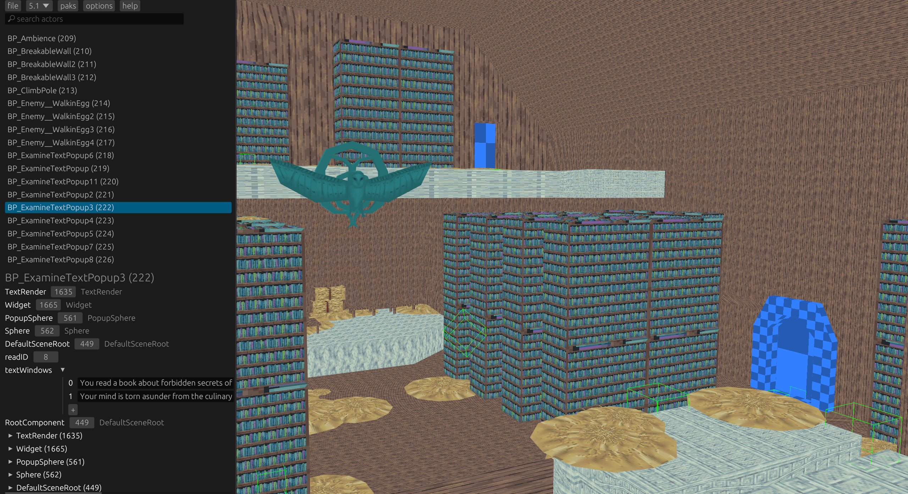

stove is an editor for cooked unreal engine maps
the idea for stove originally came when i was researching how unreal's map format worked for the blue fire rando so that i could delete, duplicate, transplant or edit actors which would allow me place any drops according to the seed
to easier debug this research, clearly a graphical editor was the most logical method to visualise it (definitely not the words of a lunatic who didn't know anything about graphics). i was also inspired by the work of Jupahe64 on spotlight (the super mario 3D world editor)
i realised since i could change object positions using uassetapi i could make a small map editor to make this easier. i originally made this using OpenTK and the GL_EditorFramework used in spotlight, the super mario 3D world editor. in doing this, i noticed that some actors would have properties which other actors of the same type did not and after adding in those properties i was delighted see those were used in-game.
then i had an incredible thought
all the information in the map is there so why can't i just duplicate an actor? so with some help from longer i figured it out. all it needed was some reference redirection and some reference adding on the level export and it was done! this was huge because from that i started working on transplanting between maps...
at this point i was fed up with OpenTK and GL_EditorFramework so remade everything in three-d... then i decided to make and use a custom rendering backend using miniquad for opengl bindings and windowing. dunno what the hell i was thinking tbh but that remained for a while
after a crap ton of work, transplanting was finally a reality. imports were transplanted and all references were correctly redirected (except for the ones in extra data :/). this felt incredible and i really felt proud of myself for this!
i released stove to the world after adding deletion and was astounded by the interest. it made the integration of modloaders a lot easier as you can transplant custom actors into the starting map.
finally i decided to tackle displaying meshes and yikes that was tedious. i was essentially copying out a known specification and had to test all the parsing but eventually got them in. it also prompted me to start working on repak (back then unpak) to extract them without umodel and to make a major PR to unreal_asset to allow any Read + Write to initialise an Asset.
ironically enough, jupahe64 told me he wanted to write spotlight 2.0 in rust wgpu. this piqued my interest and finally tore me away from my crappy custom renderer to use bevy.
 back
back